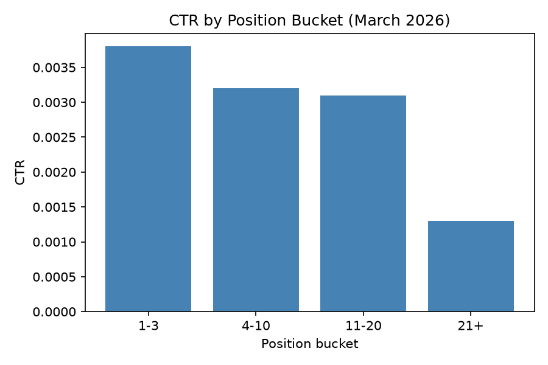

The Position Cliff
Click-through rate doesn't fade with rank — it falls off a shelf at position 21. A study of 3.6 million page-days from FlyRank's March 2026 search warehouse, and what a learned model catches that a hand-written rule misses.
Abstract
Does a page's search position and visibility reliably predict whether its click-through rate will underperform, and can a simple learned model out-prioritize a hand-written rule at flagging the pages worth a human's attention? Using 3.6 million page-day records drawn from FlyRank's March 2026 Search Console warehouse slice, we built a hand-written baseline rule (position ≥ 21 and impressions ≥ 50) and compared it against a logistic regression model trained on the same two signals, validated with a page-grouped holdout split so the same content item never appears in both train and test. The learned model substantially outperformed the rule (F1 0.898 vs. 0.092), driven almost entirely by recall: the rule's strict threshold caught only 4.8% of genuinely low-CTR pages, while the model caught 84.7%, without losing precision (0.957 vs. 0.858). Click-through rate did not decline gradually with position — it stayed roughly flat from position 1 through 20 (0.31%–0.38%) and then collapsed at position 21+ (0.13%), and raw search volume was a weak predictor of ranking quality on its own. We turn these findings into a two-reason-code, human-reviewed action queue, and we are explicit about where the analysis stops: it is observational, single-month, and — contrary to an assumption we carried from an early small sample — spans several clients rather than one, a correction we made during our own validation audit.
Problem statement
Content and SEO teams routinely act on assumptions that sound obvious: rank higher and you'll get more clicks; a high-search-volume keyword is worth more than a low-volume one; older content is stale content. This project set out to test those assumptions against real search performance data rather than accept them by default, in the specific context of Ranking Signal Analysis — deciding which of the many available signals (position, click-through rate, impression volume) a content team should actually trust when prioritizing limited review time.
The decision this work is meant to improve: which pages get a human's attention first. The action a strategist takes from it: review a ranked queue and choose between a CTR-focused fix or a content-quality review. The cost of getting it wrong is asymmetric and real — flagging a weak signal as a strong driver of decline sends effort toward pages that don't need it, while the pages that are actually underperforming go untouched.
Data
All analysis after the initial exploratory pass draws from the FlyRank Internship Warehouse release on Hugging Face (FlyRank/internship-warehouse), specifically the fact_content_daily_performance table — 78,835,655 rows at full scale, with a stated grain of one row per report date, per pseudonymized client, per pseudonymized content item.
We queried this table directly with DuckDB against its remote Parquet partitions, filtering to month = '2026-03' — a deliberately chosen mid-panel month. The table's _sample partition is not a random sample; it is the sealed final month of the dataset (June 2026), reserved for testing query mechanics, never for developing label or feature logic, since it is the natural outcome window for any past-predicts-future setup.
Of the 31 available columns, every GA4, session-source, and AI-referral field (ga4_*, sessions_*, ai_*, scroll_events) was entirely empty in this slice — zero non-null values. The usable signal surface was therefore limited to Search Console fields: gsc_impressions, gsc_clicks, gsc_avg_position, and gsc_sum_position. This is a hard ceiling on what the analysis can say — nothing here speaks to on-site engagement, conversions, or AI-driven traffic.
Methodology
Target definition
The binary target y_low_ctr is 1 when a row's click-through rate (clicks / impressions) falls below the overall average CTR computed across the March slice, else 0. This label is derived, not provided — no trend_direction-style column exists in the warehouse table, unlike the small starter dataset used in early exploration.
Feature set and leakage exclusions
Features: gsc_avg_position, gsc_impressions. gsc_clicks was deliberately excluded — it is the numerator of CTR, and CTR defines the target, so including it would be direct label leakage. One partial structural overlap remains and is disclosed rather than hidden: gsc_impressions is both a feature and the denominator of the CTR that defines the target. This is not full leakage (impressions alone cannot determine the label), but the feature and target are not fully independent, and results should be read with that in mind.
Validation design
Rows share a page × day grain, and a small number of pages repeat across many days — 8 of 20 rows in an early review turned out to be a single page on different dates. A random row split would let the same page appear in both train and test, letting a model partially memorize it rather than generalize. We used a grouped split by content_hash_id (scikit-learn's GroupShuffleSplit, 80/20), and verified — not assumed — zero page overlap between the resulting train and test sets.
Baseline and model
The baseline is the hand-written rule position ≥ 21 AND impressions ≥ 50, scored as a classifier against the same grouped test set. The model is logistic regression (class_weight='balanced', to correct for the target's class imbalance — roughly 90% of rows are labeled low-CTR), chosen for being a proportionate, interpretable step up from the baseline rather than an unjustified jump to a more complex method.
Success metric
Precision, recall, and F1 — not accuracy — given the class imbalance in the target. Recall matters in particular: missing a genuinely underperforming page is the costlier error for the intended use case of this work.
Model vs. baseline, same split, same metric
| Approach | Precision | Recall | F1 |
|---|---|---|---|
| Baseline — hand-written rule | 0.858 | 0.048 | 0.092 |
| Logistic Regression | 0.957 | 0.847 | 0.898 |
The gap is almost entirely a recall story. The rule's rigid AND-threshold is precise when it fires — it's rarely wrong — but it fires on only a narrow slice of actual low-CTR pages. The model, using the same two raw signals with a learned rather than hand-set boundary, catches 17× more of the true low-CTR population while improving precision too.
Confusion matrix — Logistic Regression, held-out test set
True negatives 46,642 · False positives 24,695 · False negatives 100,024 · True positives 551,670
Even at 0.847 recall, 100,024 genuinely low-CTR pages were missed. A strong aggregate score can still hide a large absolute miss count — worth stating plainly rather than letting the F1 figure speak alone.
The CTR cliff, not a CTR slope

Position tiers 4–10 and 11–20 are nearly indistinguishable (0.32% vs. 0.31%) — the widely assumed smooth "CTR curve" is closer to flat, then a cliff: CTR only meaningfully collapses once a page falls to position 21 or worse, where it drops to less than half of every better-ranked tier. MIXED against the naive expectation of a steady, gradual decline.
Search volume did not predict ranking quality
| Impression volume tier | n rows | Avg. position |
|---|---|---|
| High (1,000+) | 32,419 | 11.89 |
| Medium (100–999) | 606,189 | 11.02 |
| Low (<100) | 9,202,770 | 16.85 |
High-volume pages ranked no better than medium-volume ones on average — medium-volume pages actually edged ahead (11.02 vs. 11.89). What differed clearly was the low-volume tier, ranking noticeably worse across the board. REVERSED against the "high volume = high priority opportunity" assumption behind typical quick-win logic: the largest pool of poorly-ranked pages sits in low-volume, not high-volume, territory.
Where this stops being valid
A correction we made on ourselves
An early 100-row sample (and an early, narrower baseline rule) suggested this analysis was effectively single-client. Our Week 7 action queue, built from the full March slice with a broader rule, surfaces at least five distinct clients in its top 20 rows alone. We are stating the corrected picture here rather than the earlier assumption: this dataset spans multiple clients, and the exact distribution across them has not been fully characterized.
- Single month. March 2026 only. No seasonal or trend behavior is captured; a different month could show a different CTR-by-position or volume-by-position shape.
- No causal claim. Every finding here is an observed, directional association in this sample — not proof that fixing a flagged page will recover clicks. That would require a real before/after measurement, which this project did not run.
- Partial feature/target overlap.
gsc_impressionsis used both as a feature and inside the target's own CTR denominator — disclosed in Methodology, and a reason to treat the model's scores as directional priority rather than an independent probability. - GSC-only signal surface. GA4, session-source, and AI-referral columns were entirely empty in this slice. Nothing here speaks to engagement, conversion, or AI-driven traffic.
- No revenue or business-value weighting. The action queue ranks by impressions, not by commercial value — a low-value page with high impressions can outrank a high-value page with fewer.
The action playbook
The validated signals above feed a two-reason-code queue, exported from work/notebooks/w07_action_playbook.ipynb as work/outputs/action_playbook_queue.csv (708,842 rows at page-day grain).
- POOR_POSITION_WITH_VISIBILITY → improve_ctrPosition 21+, CTR below the March portfolio average, impressions ≥ 50. The mechanical case: the page ranks poorly but already has clicks, so a title/snippet refinement is a reasonable first attempt.
- ZERO_CLICKS_WITH_VISIBILITY → review_content_qualityReal impressions, literally zero clicks. Kept separate from the CTR fix because a total click failure can signal a deeper relevance or content-quality problem that a snippet tweak won't solve — this needs a human content review, not an automatic action.
What a reviewer must check before acting
Whether the flag is a one-day anomaly rather than a persistent pattern; whether the query's intent is informational (where low clicks can be normal); whether a zero-click page should be consolidated or noindexed rather than rewritten; whether a high-impression page was flagged purely for its volume despite already having healthy CTR; and whether the client/period match March 2026, since thresholds were derived from that slice specifically.
What should never be automated
Auto-publishing rewritten titles or content; auto-removing or noindexing pages; auto-reallocating budget or headcount from the ranked order; treating rank position as a guaranteed-ROI signal rather than a priority hint.
Monitoring & retrain triggers
- The position-21 CTR cliff shifts in a new month — thresholds should be re-derived, not reused from March.
- The portfolio CTR benchmark moves meaningfully month over month.
- A sample of acted-on pages shows no measurable lift after ~30 days.
- A growing share of flags turn out to already have healthy CTR on manual review.
This is a human-reviewed, non-production tool. The recommended cadence is a lightweight monthly re-run, not an automated retraining pipeline.
Reproducibility
Every number in this paper traces back to a committed notebook in this repository:
work/notebooks/w01_research_question.ipynb— initial lane framing and first signal checkwork/notebooks/w02_ml_task_framing.ipynb— task type, target, success metricwork/notebooks/w03_data_contract.ipynb— warehouse table, grain, verification querieswork/notebooks/w04_baseline_score.ipynb— signal checks and the hand-written baseline rulework/notebooks/w05_model.ipynb— grouped split, logistic regression, baseline comparisonwork/notebooks/w06_validation_audit.ipynb— leakage audit, claim rewritework/notebooks/w07_action_playbook.ipynb— the ranked action queue and this paper's exports
Data access: request access to FlyRank/internship-warehouse on Hugging Face, generate a plain-Read token, and query the fact_content_daily_performance table's Parquet partitions directly via DuckDB — no full download required. Metrics referenced throughout are committed at work/outputs/metrics.json.